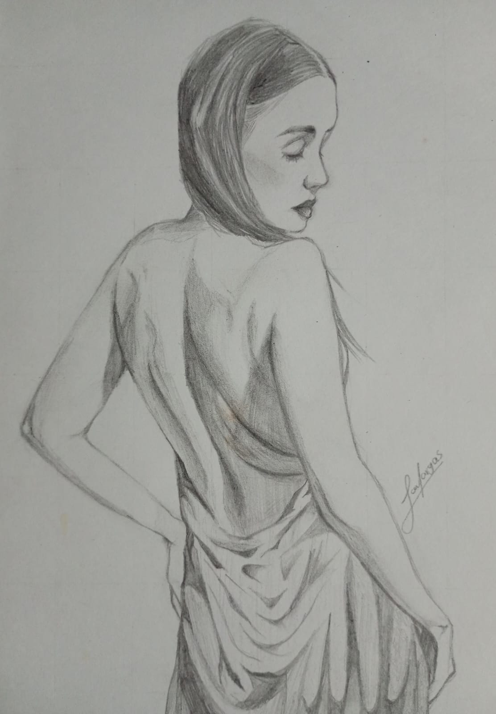
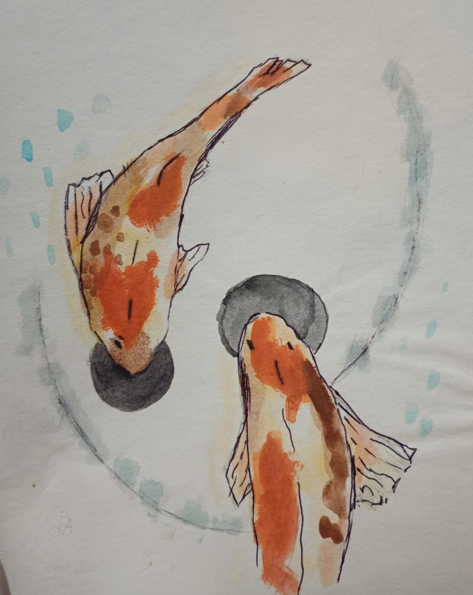
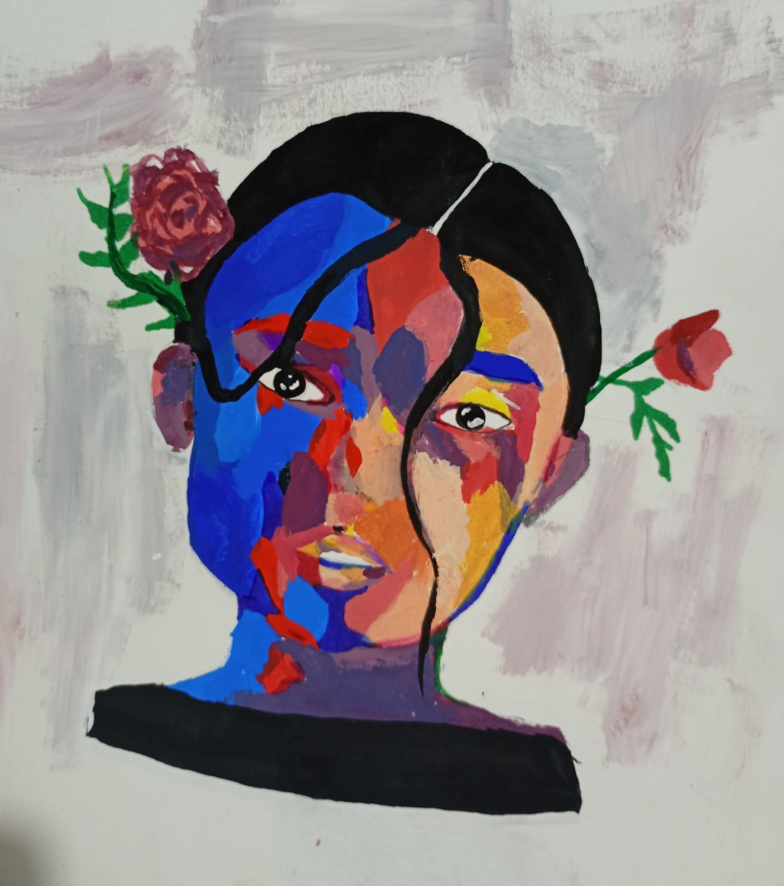

Ténicas que uso
Gráfito
Esta técnica es la que más uso y en la que necesitas menos materiales: solo un lapiz y borrador.
Acuarela
Es una técnica que suelo usar de vez en cuando. En este estilo se usan más materiales como hojas de un buen grosor, pinceles y la paleta de acuerelas.
Acrílico
Es una técnica que uso poco pero que me encantaría dominarla y tener más habilidad para poder usarla sin miedo a estropear un dibujo. Considero que es el más dificil, tanto por los materiales como por la habilidad, ya que el acrilico es un material muy denso y dificil de manejar.
